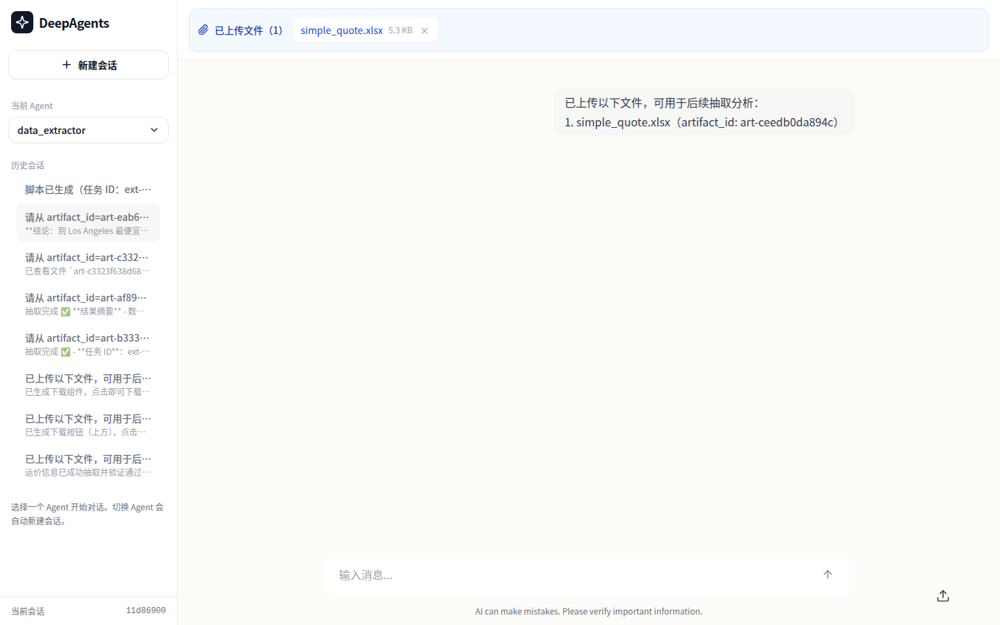
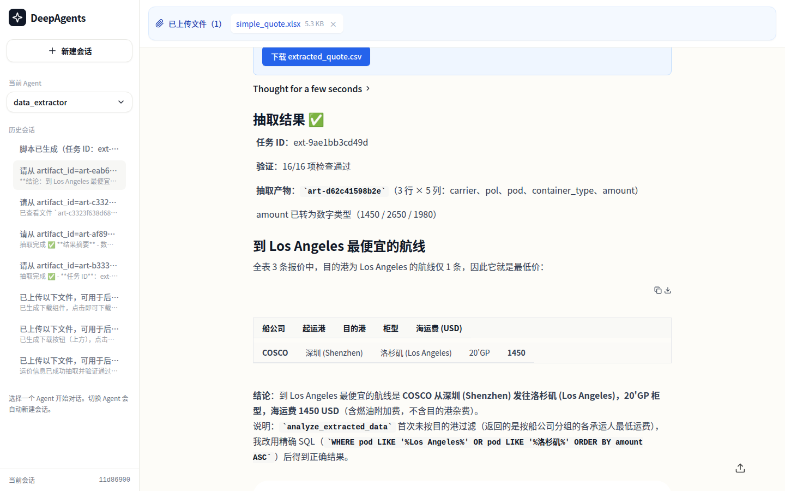

2026-08-22 · 三层端到端验证（L1 工具级 / L2 真实模型 SSE / L3 全栈浏览器）全部通过
| 编号 | 标准 | 状态 |
|---|---|---|
| S-1 | query_extracted_data 对合法 SQL 返回结构化结果 | ✅ 通过（pytest） |
| S-2 | 非法 SQL / 文件不存在返回可读 error | ✅ 通过（pytest） |
| S-3 | analyze_extracted_data 识别最低/平均/分组/计数意图 | ✅ 通过（pytest） |
| S-4 | 多文件对比 JOIN 返回双方价格与差值 | ✅ 通过（pytest） |
| S-5 | 跨 thread 访问被拒绝（会话隔离） | ✅ 通过（pytest） |
| S-6 | Agent 通过 render_ui 渲染 data_table/chart/metric_card | ✅ 通过（L2 SSE + L3 浏览器） |
| S-7 | 工具级 E2E 全链路（上传→抽取→分析→渲染信封） | ✅ 通过（18/18 用例） |
| S-8 | ruff check 通过、类型注解完整 | ✅ 通过 |
| S-9 | 全量后端测试无回归 | ✅ 通过（278 passed） |
| S-10 | 真实模型 verify_analysis.py 输出含分析工具 + render_ui 调用 | ✅ 通过（exit=0） |
tests/test_query_extracted_data.py::TestQueryExtractedData::test_aggregate_query PASSED [ 5%] tests/test_query_extracted_data.py::TestQueryExtractedData::test_limit_truncation PASSED [ 11%] tests/test_query_extracted_data.py::TestQueryExtractedData::test_invalid_sql_returns_error PASSED [ 16%] tests/test_query_extracted_data.py::TestQueryExtractedData::test_non_select_rejected PASSED [ 22%] tests/test_query_extracted_data.py::TestQueryExtractedData::test_unknown_artifact PASSED [ 27%] tests/test_query_extracted_data.py::TestQueryExtractedData::test_wrong_artifact_type_rejected PASSED [ 33%] tests/test_query_extracted_data.py::TestQueryExtractedData::test_cross_thread_rejected PASSED [ 38%] tests/test_analyze_extracted_data.py::TestAnalyzeExtractedData::test_min_intent PASSED [ 44%] tests/test_analyze_extracted_data.py::TestAnalyzeExtractedData::test_avg_intent PASSED [ 50%] tests/test_analyze_extracted_data.py::TestAnalyzeExtractedData::test_count_intent PASSED [ 55%] tests/test_analyze_extracted_data.py::TestAnalyzeExtractedData::test_group_intent PASSED [ 61%] tests/test_analyze_extracted_data.py::TestAnalyzeExtractedData::test_comparison PASSED [ 66%] tests/test_analyze_extracted_data.py::TestAnalyzeExtractedData::test_empty_request PASSED [ 72%] tests/test_analyze_extracted_data.py::TestAnalyzeExtractedData::test_cross_thread_rejected PASSED [ 77%] tests/test_analysis_e2e.py::TestAnalysisE2E::test_full_chain_query_render PASSED [ 83%] tests/test_analysis_e2e.py::TestAnalysisE2E::test_full_chain_analyze_render PASSED [ 88%] tests/test_analysis_e2e.py::TestAnalysisE2E::test_full_chain_comparison PASSED [ 94%] tests/test_analysis_e2e.py::TestAnalysisE2E::test_session_isolation_chain PASSED [100%] ======================== 18 passed, 1 warning in 22.89s ========================
[OK] 服务健康: {'status': 'healthy', 'service': 'deepagents-scaffold'}
[OK] 文件上传成功: artifact_id=art-76495f015eda, size=5048 bytes
[>] 调用 POST /agent/data_extractor (thread_id=thread-verify-7cf94bdc)
消息: 请从 artifact_id=art-76495f015eda 的 Excel 报价单中抽取 carrier、pol、pod、container_type、amount 字段，amount 必须是数字。
[Tool Call] preview_excel
args: {"artifact_id": "art-76495f015eda"}
[Tool Call] read_file
args: {"file_path": "/home/weilan/workdir/selfcode/deepagents-scaffold/src/scaffold/plugins/skills/extraction-goal/SKILL.md", "limit": 1000}
[Tool Call] read_file
args: {"file_path": "/home/weilan/workdir/selfcode/deepagents-scaffold/src/scaffold/plugins/skills/extraction-code/SKILL.md", "limit": 1000}
[Tool Result] 1 ---
2 name: extraction-goal
3 description: 设立 Excel 抽取目标，与用户对齐字段和约束
4 ---
5
6 # Excel 抽取目标设立
7
8 ## 触发时机
9
10 当用户上传 Excel 文件并表达抽取需求时，进入本 Skill。典型用户表述：
11
12 - “请帮我从这份报价单中抽取 carrier、pol、po...
[Tool Result] 1 ---
2 name: extraction-code
3 description: 生成并执行 Excel 抽取脚本
4 ---
5
6 # Excel 抽取脚本生成与执行
7
8 ## 触发时机
9
10 本 Skill 通常由 `extraction-goal` 触发，或在用户明确说“执行抽取脚本”、“重新生成脚本”时进入。
11
12 ## 执行步骤
13...
[Tool Result] {"sheet_names": ["Freight"], "columns": ["carrier", "pol", "pod", "container_type", "amount", "valid_from"], "sample_rows": [["MSC", "Shanghai", "Los Angeles", "20GP", 1200, "2026-08-01"], ["COSCO", "Ningbo", "Los Angeles", "40HQ", 2300, "2026-08-01"...
[Assistant] 预览确认：文件 `art-76495f015eda` 包含 sheet「Freight」，列名与目标字段完全一致（carrier / pol / pod / container_type / amount），共 3 行样例数据，需求明确。开始生成抽取脚本。
[消息结束]
[Tool Call] generate_extraction_code
args: {"upload_artifact_id": "art-76495f015eda", "requirements": {"description": "从报价单中抽取船公司、起运港、目的港、箱型、运价金额字段", "fields": [{"name": "carrier", "description": "船公司", "type": "string", "required": true}, {"n
[Tool Result] {"task_id": "ext-223cb0f4d429", "script_artifact_id": "art-33d4ddf4c5e7", "script_content": "from __future__ import annotations\n\n\"\"\"自动生成的 Excel 抽取脚本。\"\"\"\n\nimport json\nimport os\nimport re\n\nimport pandas as pd\n\nINPUT_FILE = os.environ.ge...
[Assistant] 脚本已生成（任务 ID：ext-223cb0f4d429），现在执行。
[消息结束]
[Tool Call] execute_extraction_code
args: {"task_id": "ext-223cb0f4d429"}
[Tool Result] {"task_id": "ext-223cb0f4d429", "extracted_artifact_id": "art-2cfba40e45b8", "total_rows": 3, "columns": ["carrier", "pol", "pod", "container_type", "amount"], "status": "validating"}
[Assistant] 执行成功，进入验证环节。
[消息结束]
[Tool Call] validate_extraction_result
args: {"task_id": "ext-223cb0f4d429"}
[Tool Result] {"task_id": "ext-223cb0f4d429", "passed": true, "summary": "16/16 项检查通过", "checks": [{"rule": "字段 carrier 存在", "status": "pass", "details": null}, {"rule": "字段 pol 存在", "status": "pass", "details": null}, {"rule": "字段 pod 存在", "status": "pass", "deta...
[Assistant] 验证通过（16/16 项检查）。展示抽取结果并提供下载。
[消息结束]
[Tool Call] render_ui
args: {"type": "data_table", "props": {"title": "报价单抽取结果", "columns": [{"key": "carrier", "label": "船公司"}, {"key": "pol", "label": "起运港"}, {"key": "pod", "label": "目的港"}, {"key": "container_type", "label":
[Tool Call] render_ui
args: {"type": "download_button", "props": {"artifact_id": "art-2cfba40e45b8", "file_name": "extracted.csv", "description": "点击下载抽取结果 CSV"}}
[Tool Result] {"generative_ui": {"type": "data_table", "props": {"title": "报价单抽取结果", "columns": [{"key": "carrier", "label": "船公司"}, {"key": "pol", "label": "起运港"}, {"key": "pod", "label": "目的港"}, {"key": "container_type", "label": "箱型"}, {"key": "amount", "label"...
[Tool Result] {"generative_ui": {"type": "download_button", "props": {"artifact_id": "art-2cfba40e45b8", "file_name": "extracted.csv", "description": "点击下载抽取结果 CSV"}, "surfaceId": null}}
[Assistant] 抽取完成，验证全部通过。
**抽取摘要**
- 数据源：art-76495f015eda（sheet：Freight）
- 抽取字段：carrier、pol、pod、container_type、amount
- 结果行数：3 行
- 输出工件 ID：art-2cfba40e45b8
| carrier | pol | pod | container_type | amount |
|---|---|---|---|---|
| MSC | Shanghai | Los Angeles | 20GP | 1200 |
| COSC | Ningbo | Los Angeles | 40HQ | 2300 |
| ONE | Qingdao | Oakland | 20GP | 1350 |
amount 字段已清洗为数字类型，验证 16/16 项检查全部通过。上方表格可查看结果，下载按钮可获取 CSV 文件。如需进一步查询、统计或对比分析，随时告诉我。
[消息结束]
[RUN_FINISHED]
[PASS] 第一轮出现工具调用: ['execute_extraction_code', 'generate_extraction_code', 'preview_excel', 'read_file', 'render_ui', 'validate_extraction_result']
[PASS] 第一轮无 RUN_ERROR
[OK] 抽取结果工件已生成: art-2cfba40e45b8
[PASS] extraction_id 格式正确: art-2cfba40e45b8
[>] 调用 POST /agent/data_extractor (thread_id=thread-verify-7cf94bdc)
消息: 请对抽取结果 extraction_id=art-2cfba40e45b8 执行分析：到 Los Angeles 的航线中哪个最便宜？请先调用 query_extracted_data 或 analyze_extracted_data，然后
[Tool Call] query_extracted_data
args: {"extraction_id": "art-2cfba40e45b8", "sql": "SELECT carrier, pol, pod, container_type, amount FROM data WHERE pod = 'Los Angeles' ORDER BY amount ASC LIMIT 10"}
[Tool Result] {"columns": ["carrier", "pol", "pod", "container_type", "amount"], "rows": [["MSC", "Shanghai", "Los Angeles", "20GP", 1200], ["COSCO", "Ningbo", "Los Angeles", "40HQ", 2300]], "row_count": 2, "truncated": false}
[Tool Call] render_ui
args: {"props": {"title": "到 Los Angeles 的航线运价（按价格升序）", "columns": [{"key": "carrier", "label": "船公司"}, {"key": "pol", "label": "起运港"}, {"key": "pod", "label": "目的港"}, {"key": "container_type", "label": "箱型
[Tool Result] {"generative_ui": {"type": "data_table", "props": {"title": "到 Los Angeles 的航线运价（按价格升序）", "columns": [{"key": "carrier", "label": "船公司"}, {"key": "pol", "label": "起运港"}, {"key": "pod", "label": "目的港"}, {"key": "container_type", "label": "箱型"}, {"key"...
[Assistant] **结论**：到 Los Angeles 的航线共有 2 条，最便宜的是 **MSC 从 Shanghai 出发的航线（20GP，1200 美元）**，比 COSCO 从 Ningbo 出发的航线（40HQ，2300 美元）便宜 1100 美元。
需要注意一点：这两条航线箱型不同（20GP vs 40HQ），价格差异包含箱型因素。如果只看同箱型比较，本数据中到 Los Angeles 的 20GP 仅 MSC 一条，无法直接对比；若需要按箱型分别比较或做更深入的分析，可以告诉我。
[消息结束]
[RUN_FINISHED]
[PASS] 第二轮无 RUN_ERROR
[PASS] Agent 调用了分析工具: ['query_extracted_data', 'render_ui']
[PASS] Agent 调用了 render_ui 渲染结果
[PASS] 第二轮正常结束 RUN_FINISHED
============================================================
Phase 3 端到端验证结果:
[PASS] 第一轮出现工具调用: ['execute_extraction_code', 'generate_extraction_code', 'preview_excel', 'read_file', 'render_ui', 'validate_extraction_result']
[PASS] 第一轮无 RUN_ERROR
[PASS] extraction_id 格式正确: art-2cfba40e45b8
[PASS] 第二轮无 RUN_ERROR
[PASS] Agent 调用了分析工具: ['query_extracted_data', 'render_ui']
[PASS] Agent 调用了 render_ui 渲染结果
[PASS] 第二轮正常结束 RUN_FINISHED
============================================================
结论: 验证全部通过 ✅ Phase 3 分析链路（抽取 → SQL 分析 → render_ui）在真实模型下可用


Phase 3 全部成功标准满足：分析工具（query_extracted_data / analyze_extracted_data）、多文件对比、会话隔离、生成式 UI 渲染链路在自动化测试、真实模型 SSE、真实浏览器三个层面均验证通过。